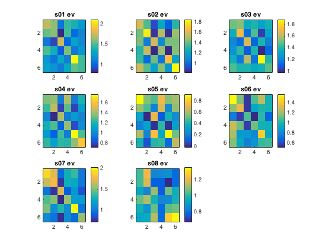
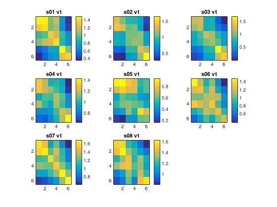
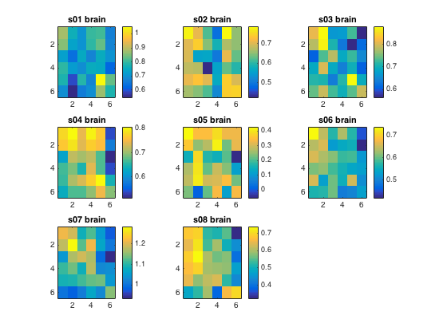
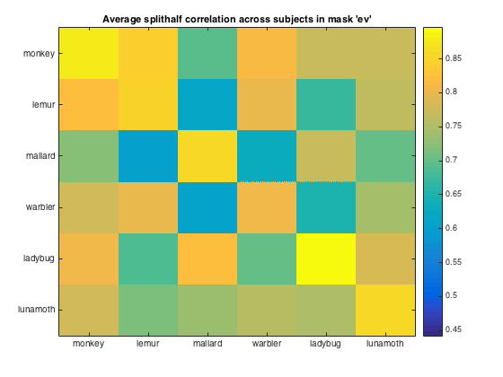
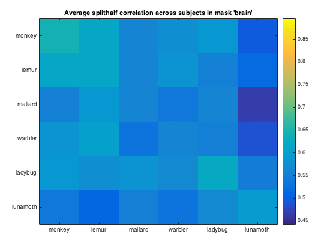
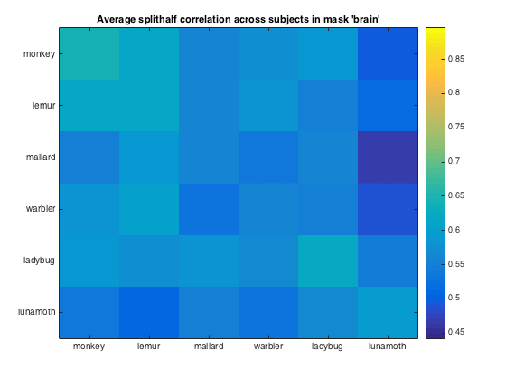

roi-based MVPA with group-analysis
Load t-stat data from all subjects, apply 'vt' mask, compute difference of (fisher-transformed) between on- and off diagonal split-half correlation values, and perform a random effects analysis.
- For CoSMoMVPA's copyright information and license terms, #
- see the COPYING file distributed with CoSMoMVPA. #
Contents
Set analysis parameters
subject_ids={'s01','s02','s03','s04','s05','s06','s07','s08'};
rois={'ev'; 'vt'; 'brain'};
labels = {'monkey'; 'lemur'; 'mallard'; 'warbler'; 'ladybug'; 'lunamoth'};
nsubjects=numel(subject_ids);
% allocate space for output
sum_weighted_zs_all=zeros(nsubjects,1);
config=cosmo_config();
study_path=fullfile(config.tutorial_data_path,'ak6');
Loop over rois
nrois=numel(rois);
for i_roi = 1:nrois
% pre-allocate space weighted correlation difference % in each subject sum_weighted_zs_all=zeros(nsubjects,1);
Computations for each subject
for i_subj=1:nsubjects subject_id=subject_ids{i_subj}; data_path=fullfile(study_path, subject_id); % file locations for both halves half1_fn=fullfile(data_path,'glm_T_stats_odd.nii'); half2_fn=fullfile(data_path,'glm_T_stats_even.nii'); %mask name for given subject and roi mask_fn=fullfile(data_path,[rois{i_roi},'_mask.nii']); % load two halves as CoSMoMVPA dataset structs. half1_ds=cosmo_fmri_dataset(half1_fn,'mask',mask_fn); half2_ds=cosmo_fmri_dataset(half2_fn,'mask',mask_fn); % get the sample data % each half has six samples: % monkey, lemur, mallard, warbler, ladybug, lunamoth. half1_samples=half1_ds.samples; half2_samples=half2_ds.samples; % compute all correlation values between the two halves, resulting % in a 6x6 matrix. Store this matrix in a variable 'rho'. % Hint: use cosmo_corr % >@@> rho=cosmo_corr(half1_samples',half2_samples'); % <@@< % for the advanced exercise ('compute the average of all individual % correlation matrices'): if the first subject and roi, % allocate space for a 'rho_sum' array with three dimensions; % the first two dimensions for the two halves, the third % one for different rois. % Then add 'rho' to 'rho_sum' % % (If you don't want to do the advanced % exercise, yo don't have to do anything here.) % >@@> if i_subj == 1 && i_roi == 1 % first correlation was just computed, and we now know % the number of conditions through the size of rho. % % allocate space for sum over subjects nclasses=size(rho,1); rho_sum=zeros([nclasses,nclasses,nrois]); end rho_sum(:, :, i_roi)=rho_sum(:, :, i_roi)+rho; % <@@< % To make these correlations more 'normal', apply a Fisher % transformation and store this in a variable 'z' (use atanh). % >@@> z=atanh(rho); % <@@< % visualize the matrix 'z' subplot(3,3,i_subj); % >@@> imagesc(z); colorbar() title([subject_id ' ' rois{i_roi}]); % <@@< % define in a variable 'contrast_matrix' how correlations values % are going to be weighted. % The matrix must have a mean of zero, positive values on diagonal, % negative elsewhere. nclasses=size(rho,1); % sanity check; in this example there are 6 conditions assert(nclasses==6); % set contrast matrix. It has a mean of zero, the diagonal elements % sum to 1, and the non-diagonal element sum to -1 contrast_matrix=(eye(nclasses)-1/nclasses)/(nclasses-1); if abs(mean(contrast_matrix(:)))>1e-14 error('illegal contrast matrix'); end % Weigh the values in the matrix 'z' by those in the % contrast_matrix and then sum them (hint: use the '.*' % operator for element-wise multiplication). Store the results in % a variable 'sum_weighted_z'. % >@@> weighted_z=z.*contrast_matrix; sum_weighted_z=sum(weighted_z(:)); % <@@< % store the result for this subject in sum_weighted_zs_all % (at the i_subj-th position), so that % group statistics can be computed % >@@> sum_weighted_zs_all(i_subj)=sum_weighted_z; % <@@< end  
compute t statistic and print the result
run one-sample t-test again zero
% Using matlab's stat toolbox (if present) if cosmo_check_external('@stats',false) % >@@> [h,p,ci,stats]=ttest(sum_weighted_zs_all); fprintf(['correlation difference in %s at group level: '... '%.3f +/- %.3f, t_%d=%.3f, p=%.5f (using matlab stats '... 'toolbox)\n'],... rois{i_roi},mean(sum_weighted_zs_all),... std(sum_weighted_zs_all),... stats.df,stats.tstat,p); % <@@< else fprintf('Matlab stats toolbox not available\n'); end % Apart from using the 'ttest' function (if available), one can % also use 'cosmo_stat' for univaraite statistics. % For this approach, data must be represented in a dataset struct. % % The targets are chunks are set to indicate that all samples are from % the same class (condition), and each observation is independent from % the others sum_weighted_zs_ds=struct(); sum_weighted_zs_ds.samples=sum_weighted_zs_all; sum_weighted_zs_ds.sa.targets=ones(nsubjects,1); sum_weighted_zs_ds.sa.chunks=(1:nsubjects)'; ds_t=cosmo_stat(sum_weighted_zs_ds,'t'); % t-test against zero ds_p=cosmo_stat(sum_weighted_zs_ds,'t','p'); % convert to p-value fprintf(['correlation difference in %s at group level: '... '%.3f +/- %.3f, %s=%.3f, p=%.5f (using cosmo_stat)\n'],... rois{i_roi},mean(sum_weighted_zs_all),std(sum_weighted_zs_all),... ds_t.sa.stats{1},ds_t.samples,ds_p.samples);
correlation difference in ev at group level: 0.379 +/- 0.137, t_7=7.854, p=0.00010 (using matlab stats toolbox) correlation difference in ev at group level: 0.379 +/- 0.137, Ttest(7)=7.854, p=0.00010 (using cosmo_stat)
correlation difference in vt at group level: 0.397 +/- 0.163, t_7=6.864, p=0.00024 (using matlab stats toolbox) correlation difference in vt at group level: 0.397 +/- 0.163, Ttest(7)=6.864, p=0.00024 (using cosmo_stat)
correlation difference in brain at group level: 0.074 +/- 0.026, t_7=7.987, p=0.00009 (using matlab stats toolbox) correlation difference in brain at group level: 0.074 +/- 0.026, Ttest(7)=7.987, p=0.00009 (using cosmo_stat)
end
advanced exercise
% plot an image of the correlation matrix averaged over % participants (one for each roi) % allocate space for axis handles, so that later all plots can be set to % have the same color limits ax_handles=zeros(nrois,1); col_limits=zeros(nrois,2); for i_roi = 1:nrois figure % store axis handle for current figure ax_handles(i_roi) = gca; % compute the average correlation matrix using 'rho_sum', and store the % result in a variable 'rho_mean'. Note that the number of subjects is % stored in a variable 'nsubjects' % >@@> rho_mean=rho_sum(:, :, i_roi)/nsubjects; % <@@< % visualize the rho_mean matrix using imagesc % >@@> imagesc(rho_mean); % <@@< % set labels, colorbar and title set(gca, 'xtick', 1:numel(labels), 'xticklabel', labels) set(gca, 'ytick', 1:numel(labels), 'yticklabel', labels) colorbar desc=sprintf(['Average splithalf correlation across subjects '... 'in mask ''%s'''], rois{i_roi}); title(desc) col_limits(i_roi,:) = get(gca, 'clim'); end % give all figures the same color limits such that correlations can be % compared visually set(ax_handles, 'clim', [min(col_limits(:)), max(col_limits(:))])
 
